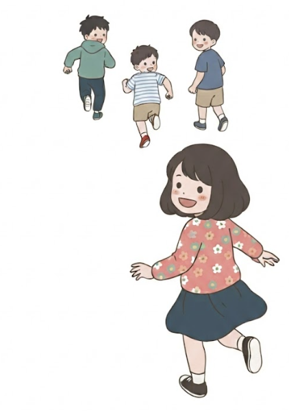
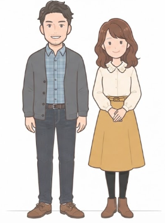
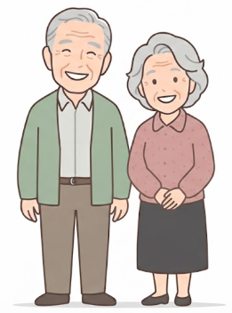

✨ ご近所の輪を、もっと元気に
二丁目に暮らす
二丁目に暮らす
みんなの笑顔が、
まちの元気になる。
子どもたちの歓声、井戸端の会話、季節の行事——。 二丁目町内会は、世代を超えたつながりから地域を元気にする活動を行っています。 お知らせや会議の様子はこちらのページから随時ご覧いただけます。

三世代がつながる、二丁目のまち
子どもたち
広場での遊びや夏祭りが大好き。地域の未来をつくる笑顔の主役です。

お父さん・お母さん世代
子育てや町内会活動の担い手。日々の暮らしの中でご近所をつなぎます。

おじいちゃん・おばあちゃん
長年の知恵と経験の宝庫。縁側での一服が地域の見守りにもなっています。